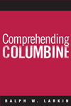

|
African
American Perspectives on Political Science
Rich, Wilber C., foreword by Charles V. Hamilton
African American political scientists speak out about their discipline,
academic issues and racism in the profession
456 pp • 6x9 • Fall 2006
paper 1-59213-109-3
EAN 978-1-59213-109-9
cloth 1-59213-108-5
EAN 978-1-59213-108-2 |
|
The
American Diary of a Japanese Girl
An Annotated Edition
Noguchi, Yone, edited by Edward Marx and Laura E. Franey
A ground-breaking work of Asian American fiction in a brand new
edition
224 pp • 6x9 • Fall 2006
paper 1-59213-555-2
EAN 978-1-59213-555-4
cloth 1-59213-554-4
EAN 978-1-59213-554-7 |

|
Another
Arabesque
Syrian-Lebanese Ethnicity in Neoliberal Brazil
Karam, John Tofik
A revealing investigation of changing identity in a globalizing
world
232 pp • 6x9 • Fall 2006
paper 1-59213-540-4
EAN 978-1-59213-540-0
cloth 1-59213-539-0
EAN 978-1-59213-539-4 |
|
The
Bottom Line
Observations and Arguments on the Sports Business
Zimbalist, Andrew
Feisty essays from one of the nation's top sports economist
312 pp • 6x9 • Fall 2006
paper 1-59213-513-7
EAN 978-1-59213-513-4
cloth 1-59213-512-9
EAN 978-1-59213-512-7 |
|
Citizen
Lobbyists
Local Efforts to Influence Public Policy
Adams, Brian
How do ordinary citizens become involved in local politics?
248 pp • 5.5x8.25 • Fall 2006
paper 1-59213-570-6
EAN 978-1-59213-570-7
cloth 1-59213-569-2
EAN 978-1-59213-569-1 |
 |
Comprehending
Columbine
Larkin, Ralph W.
The definitive book on the school massacre that shocked a nation
264 pp • 6x9 • Fall 2006
paper 1-59213-491-2
EAN 978-1-59213-491-5
cloth 1-59213-490-4
EAN 978-1-59213-490-8 |
|
Crime
and Family
Selected Essays of Joan McCord
McCord, Joan, introduction by David Farrington, foreword by Geoffrey
Sayre-McCord
Seminal essays by a pioneering criminologist, collected for the
first time
320 pp • 6x9 • Fall 2006
paper 1-59213-558-7
EAN 978-1-59213-558-5
cloth 1-59213-557-9
EAN 978-1-59213-557-8 |
|
Cultural
Citizenship
Cosmopolitanism, Consumerism, and Television in a Neoliberal
Age
Miller, Toby
A lively, incisive view of what citizenship means today
248 pp • 6x9 • Fall 2006
paper 1-59213-561-7
EAN 978-1-59213-561-5
cloth 1-59213-560-9
EAN 978-1-59213-560-8 |
|
Danny
Litwhiler
Living the Baseball Dream
Litwhiler, Danny, with Jim Sargent, foreword by Stan Musial
The fascinating career of a major league baseball player, manager,
coach, goodwill ambassador, and inventor
312 pp • 6x9 • Fall 2006
cloth 1-59213-524-2
EAN 978-1-59213-524-0 |
|
Engineering
Culture
Control and Commitment in a High-Tech Corporation
Kunda, Gideon
A revised edition of the classic text on the sociology of management
and organization
Revised Edition
320 pp • 6x9 • Fall 2006
paper 1-59213-546-3
EAN 978-1-59213-546-2
cloth 1-59213-545-5
EAN 978-1-59213-545-5 |
|
Hollywood
Asian
Philip Ahn and the Politics of Cross-Ethnic Performance
Chung, Hye Seung
How a Korean American actor became a Hollywood "Oriental"
star
256 pp • 6x9 • Fall 2006
paper 1-59213-516-1
EAN 978-1-59213-516-5
cloth 1-59213-515-3
EAN 978-1-59213-515-8 |

|
Judging Children
as Children
A Proposal for a Juvenile Justice System
Corriero, Michael A.
An innovative judge proposes a better way to discipline young lawbreakers
232 pp • 5.5x8.25 • Fall 2006
cloth 1-59213-168-9
EAN 978-1-59213-168-6 |
|
Leonard
Covello and the Making of Benjamin Franklin High School
Education as if Citizenship Mattered
Johanek, Michael C., and John L. Puckett
How can we educate students to be better citizens?
384 pp • 6x9 • Fall 2006
cloth 1-59213-521-8
EAN 978-1-59213-521-9 |
|
Masters
of the Sabar
Wolof Griot Percussionists of Senegal
Tang, Patricia
A fascinating study of Senegalese masters of the sabar drum
Includes CD
224 pp • 6x9 • Fall 2006
paper 1-59213-420-3
EAN 978-1-59213-420-5
cloth 1-59213-419-X
EAN 978-1-59213-419-9 |
|
More
Philadelphia Murals and the Stories They Tell
Golden, Jane, Robin Rice and Natalie Pompilio, photographs
by David Graham and Jack Ramsdale
The sequel to the bestselling story of the largest public art program
in the nation
160 pp • 9x11 • Fall 2006
cloth 1-59213-527-7
EAN 978-1-59213-527-1 |
|
Multiethnic
Moments
The Politics of Urban Education Reform
Clarke, Susan E., Rodney E. Hero, Mara S. Sidney, Luis Fraga
and Bari Anhalt Erlichson, foreword by Clarence N. Stone
Is anyone listening to minority voices in reforming American schools?
264 pp • 6x9 • Fall 2006
paper 1-59213-537-4
EAN 978-1-59213-537-0
cloth 1-59213-536-6
EAN 978-1-59213-536-3 |
|
The
New Chicago
A Social and Cultural Analysis
edited by Koval, John P., Larry Bennett, Michael I. J. Bennett,
Fassil Demissie, Roberta Garner and Kiljoong Kim
A comprehensive and contemporary view of Chicago, the quintessential
American city, that documents its transformation into a postindustrial,
global city
384 pp • 7x10 • Fall 2006
paper 1-59213-088-7
EAN 978-1-59213-088-7
cloth 1-59213-087-9
EAN 978-1-59213-087-0 |

|
The
Racial Logic of Politics
Asian Americans and Party Competition
Kim, Thomas P.
Why the two-party political system works against Asian Americans
208 pp • 6x9 • Fall 2006
paper 1-59213-549-8
EAN 978-1-59213-549-3
cloth 1-59213-548-X
EAN 978-1-59213-548-6 |
|
The
Smoke of the Gods
A Social History of Tobacco
Burns, Eric
From the author of The Spirits of America, an energetic
history of tobacco use
296 pp • 6x9 • Fall 2006
cloth 1-59213-480-7
EAN 978-1-59213-480-9 |

|
The
Sorcery of Color
Identity, Race, and Gender in Brazil
Nascimento, Elisa Larkin
An examination of how racial and gender hierarchies are intertwined
in Brazil
336 pp • 6x9 • Fall 2006
cloth 1-59213-350-9
EAN 978-1-59213-350-5 |

|
Surviving
Mexico's Dirty War
A Political Prisoner's Memoir
Ulloa Bornemann, Alberto, edited by Arthur Schmidt and Aurora
Camacho de Schmidt
A riveting memoir of Mexico's "dirty wars"
232 pp • 6x9 • Fall 2006
paper 1-59213-423-8
EAN 978-1-59213-423-6
cloth 1-59213-422-X
EAN 978-1-59213-422-9 |
|
Universities
in the Age of Corporate Science
The UC Berkeley-Novartis Controversy
Rudy, Alan P., Dawn Coppin, Jason Konefal, Bradley T. Shaw, Toby
A. Ten Eyck, Craig Harris and Lawrence Busch
Asks the hard questions about partnerships between big business
and American universities
256 pp • 6x9 • Fall 2006
cloth 1-59213-533-1
EAN 978-1-59213-533-2 |
Click here
to download the catalog (pdf). |